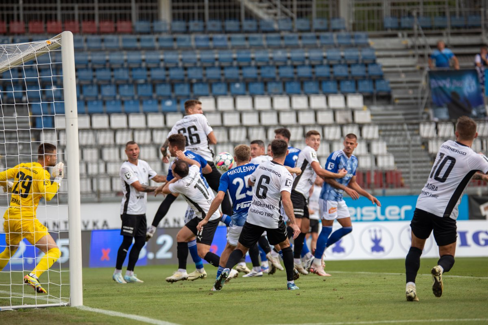
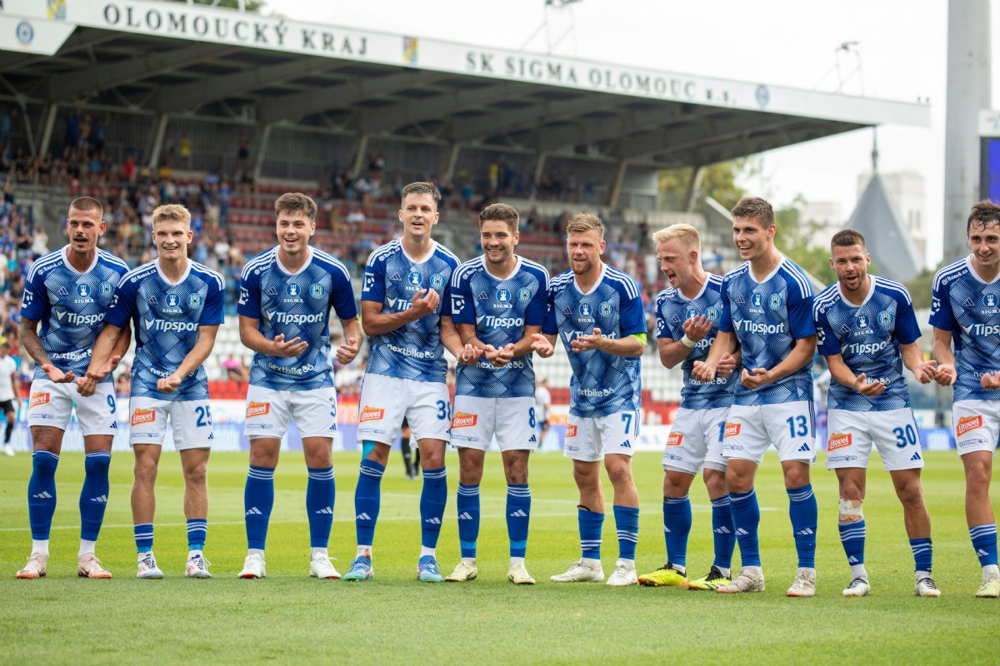

Fotbal, často nazývaný "nejpopulárnější sport na světě", spojuje miliony fanoušků po celém světě. Jeho jednoduchost a univerzální pravidla z něj dělají sport, který mohou hrát lidé všech věkových kategorií a schopností. Stačí míč, pár hráčů a jakýkoliv prostor, aby mohla začít hra plná napětí a radosti.
Každý zápas se odehrává mezi dvěma týmy po 11 hráčích, kteří se snaží dostat míč do soupeřovy brány a přitom bránit tu vlastní. Tento zdánlivě jednoduchý cíl je základem jedné z nejvíce strategických a dynamických her na světě. Kromě techniky a fyzické kondice je důležitá i schopnost číst hru a přizpůsobit se rychle měnícím situacím.
Fotbal není jen o individuálních schopnostech, ale také o týmovém duchu a spolupráci. Hráči musí spoléhat jeden na druhého, aby společně dosáhli úspěchu. Na vrcholné úrovni, jako je mistrovství světa nebo Liga mistrů, se fotbal stává oslavou dovedností, emocí a nezapomenutelných okamžiků, které fanoušci nosí v srdci po celý život.